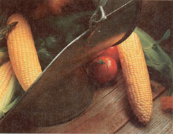

I can't speak for gardeners across the entire country, of course, but I personally have never experienced a more fruitful growing season-thanks primarily to near-perfect weather-than that of 1985. Consequently, the new seed varieties I tested last year were provided with everything they needed to do their thing and show their stuff (or lack thereof) . . . and I've chosen the best of the batch to recommend to you for 1986.
I'll begin at the beginning by telling you about the vegetable varieties that can be sown the earliest (right now in most parts of the U.S.), then proceed according to the usual order of planting. Please keep in mind that, even though I have space to mention the outstanding qualities of only a few, all of the vegetable varieties in the following listing are there because they're exceptional in growth rate, hardiness, flavor, and even aesthetics.
This year we have some dandy lettuce varieties to choose from. Leading the list is a leaf type called Red Fire, offered by Vermont Bean Seed Company (VBS). Red Fire is resistant to both heat and cold, and the crisp and tender leaves will add vibrant color to your summer salads. VBS is also your source for one of the better new "crisphead" (or iceberg) types, dubbed Ballade. Ballade matures early (80 days) and is medium-sized, with a firm, bright green head. It can be planted closely and bears up under heat admirably. Thompson & Morgan (T&M) has an even earlier maturing crisphead (75 days) called El Toro. "The Bull" lives up to its name by withstanding extremes of cold and wet in early spring, but nonetheless it has a tender heart.
Summer Baby Bibb, one of the better new Bibb lettuces, hails from Shepherd's Seeds. Summer Baby is sweet and possibly the tastiest of the Bibbs that are able to withstand hot weather. Shepherd's also offers one of the finest new romaines, called Rouge d'Hiver. With its broad red leaves, this one really stands out in the garden-and produces massive, solid, deep-hearted heads. My final recommendation, also from Shepherd's, is a Batavian type called Bogota. Batavian lettuces have yet to really catch on in America, but if you'll give Bogota a try, I think you'll see why Europeans are so enamored of these crisp green beauties.
One of the most flamboyant-in fact, that's its name-of the new radishes is a European variety offered by Shepherd's. A half-long type, Flamboyant is a beautiful glossy white and vermilion with juicy, crisp, and only mildly pungent flesh.
Midwest Seed Company gets in on the radish act with its wonderful Fuego. Bright red and delicious, this newly developed variety matures in about 25 days. One of Fuego's strongest suits is its resistance to fusarium, a chief disease of radishes. And for a tasty red radish that's resistant not only to fusarium but to black root and root scurf as well, try Fancy Red, from Harris Seeds.
If your taste in radishes runs to the pure white varieties, I recommend Snowbelle from Twilley Seed Company. Snowbelle is about as close to white-radish perfection as you're likely to find, maturing in 30 days to a big, round bulb of tangy delight.
Gilfeather-available from both VBS and T&M-is the best of the new turnip varieties (new, that is, to North America; its unique, sweet flavor has been treasured for nearly a century now by European gardeners). And as a bonus for greens lovers, Gilfeather tops are almost identical in appearance and taste to kale.
Another fine European turnip, this one offered by Shepherd's, is DeNancy, which matures in just 45 days (about three weeks earlier than Gilfeather) and produces a crisp, purple-and-white root with a mild flavor. Similar to DeNancy is Tokyo Top, from Kilgore Seed Company. This hybrid has tasty green tips and delicious, pure white roots that average 2" to 3" in length.
Skookum, from Twilley, leads the spinach list this year. Maturing in 41 days, Skookum may be the best-tasting, most diseaseresistant semisavoy spinach ever offered. However, Majore Hybrid-from Porter & Son, Seedsmen-is also a fine new variety that's slow to bolt and tasty both fresh and processed. And to make it a trio, consider Meyer Seed Company's Savoy Supreme. Developed at the University of Wisconsin, this nonhybrid is as delightful to look at as it is to eat.
Of the many fine new varieties of greens to emerge from my 1985 trials, one of the best is Tendergreen II mustard from Porter. This hybrid improvement over the original Tendergreen is tastier and even more productive than its predecessor.
Kale seems to be gaining in popularity, and the best recent introduction I've found-combining high productivity with great flavor-is Winterbor from Johnny's
Selected Seeds. Winterbor does well planted early and will continue to thrive until snow flies in late fall. Other good kales are Cottagers from T&M and Verdura from Shepherd's (Verdura matures about 10 days sooner than the other two).
One of the many good new onion varieties is Sweet Sandwich from Liberty Seed Company. This Sweet Spanish-type onion is also a good keeper and slices like a dream. Another dandy burger topper is Sweet Winter, from Geo. W. Park Seed Company. If planted in the fall and wintered over, Sweet Winter will take off on its own in early spring, providing large, tasty onions long before the main crop is ready to harvest.
Of the many new, main-crop, long-storage onions around this year, I recommend Copra from Johnny's, Tarmagon from Stokes Seeds, and Autumn Glo from Farmer's Seed & Nursery-all of which are easily started from seed.
Yet another new onion, worth growing as a novelty, is No Tears from T&M; the name is self-explanatory.
And finally, a new twist on an old favorite: The Vidalia onion-world famous for its remarkable flavor-can now be grown from the seed available from Henry Field & Company. I'm not saying it's easy to grow Vidalias from this new seed-just that it can be done . . . and it's certainly worth the trouble!
The best of the few new pea varieties for 1986 is a snow pea from Field, appropriately called Snowflake. Not only were my Snowflakes' short, stout vines loaded with large, tender peas, but if I kept them picked, the plants kept producing over an extended period. Another new pea worth noting is Sweet Snap from VBS. This one produces peas that are sweet, tender, and never stringyand the plant is more compact and disease-resistant than the popular Sugar Snap variety.
When you think of cabbage, think of Treta from Park. This cone-headed beauty is crisp, sweet, and far superior to my previous favorite, Jersey Wakefield. Park is also the source for Heavy Weighter Hybrid, a large, heat- and frost-resistant main-season type. Grenadier, from Shepherd's, is another good main-season cabbage. (This Dutch introduction isn't as big as the Heavy Weighter Hybrid, but it makes up for that by being highly crack-resistant, enabling it to be left in the garden much longer.) Other new varieties worthy of a look include Blue Ribbon from Twilley, Tucana from Stokes, and Superior Danish from Johnny's.
Red cabbage has made a comeback recently and is quite popular in salads. Two of the best varieties are Red Ribbon from Twilley and Super Red from Liberty.
There are also two promising new savoy cabbages this season. Spivoy, from T&M, is a minisavoy that does well in poor soil, even with close planting and under drought conditions, and it's highly resistant to bursting. A similar variety is the Early Curly Hybrid Savoy from Burpee Seed Company. Early Curly is larger than Spivoy and equally delicious. Another good new savoy is Salarite, offered by Stokes.
Of the kohlrabis, I prefer Waldemar White from Shepherd's. This variety, when eaten raw, actually has an applelike flavor! A good purple kohlrabi is the slow-bolting Purple Delicacy from VBS-ten days slower to mature than most other varieties, but worth the wait.
Green Dwarf No. 36 broccoli is a superb, space-saving miniature from Park. This 8" plant bears 5-1/2" heads with exceptional flavor, can be planted closely, and is resistant to that bane of broccolis, downy mildew. Another fine introduction is Dandy Early from T&M-it can be grown both spring and fall, and it freezes well. An excellent standard-type broccoli is Packman, from Johnny's. This strong, compact, early producer yields large, tasty heads.
Twilley's Earli-Light cauliflower has all the good points of my previous favorite, J White Contessa (also from Twilley), but has larger heads that mature earlier. For an exceptionally tender, delicate-flavored cauliflower, try Raket from Shepherd's. And finally, Newton Seale from T&M and Early Selfe-Blanche from Liberty are both also superb-and prolific-cauliflowers.
Brussels sprouts have gained popularity recently due to their purported health benefits. Shepherd's is helping to fill the demand with Valiant, a fine European variety that produces delicate, rich-flavored, buttonlike sprouts. The other new Brussels sprout worth noting is the Ormavon Hybrid from T&M-unique in that a large cabbage grows at the top of the sprout-producing stalk, with both sprouts and cabbage being delicious and long-lasting.
Leading the beet parade is Royal Detroit from Twilley. Not only does this fine new hybrid have a super taste, but it's nearly free of zoning (uniform in color), making it superb for processing. Both Henry Field and Meyer offer Red Ace, another superior beet hybrid that's early-maturing and free of zoning.
Burpee, long a leading producer of fine carrot varieties, leads the pack with Toudo, probably the most perfect Nantes-type carrot you'll ever see. Tondo can be harvested any time from infancy to maturity (70 days), reaching a length of 7-1/2". A similar variety is Lindoro, from Park. And if you want to turn your carrots into juice, you'll be hard-pressed to find better than Mokum, from T&M. Finally, gardeners who are looking for slim carrot sticks should go with Pak Mor from Farmer's-it's similar to the Danvers type, but a better keeper, with a coreless, bright orange center.
The only new spud varieties worth noting are both red. From Park we have Sangre, a delicious, long-term keeper . . . while both Field and Gurney Seed & Nursery offer Rosa, a delicious, blight-resistant potato.
There are enough excellent new corn varieties available this season to fill a book.
If early white corn is your favorite, try Stardust, from Park. Of the midseason whites, consider White Magic from Harris (73 days), Chalice from either Twilley or Wyatt-Quarles Seed Company (78 days), and Bunton 74 from Bunton Seed Company-a producer of delicious 8-1/2" ears.
The most attractive of the yellow midseason varieties is Twilley's Debutante, yielding 7-1/2" cobs in 73 days. Crusader, by Stokes, is one of the strongest growers I know of . . . and Butterfruit, from Park, will give you plenty of tasty 8" ears from a little 5' plant.
Moving along to the big fellas, we have Summer Delicious from Liberty, it's a late maturer (96 days), but its huge 9-1/2" ears are worth the wait-they're good as good can be. Twilley's Great-Taste offers elevated sugars and a wonderfully milky texture. A similar variety is Miracle, from Burpee.
The best new main-season bicolor corn is the G-90 Hybrid from Porter. Each G-90 plant produces two ears of bicolored corn that are equal or superior in flavor to nearly any yellow or white variety, and both freeze and can well.
Of the main-season whites, I like Silver Pac from Liberty, which takes 86 days to produce an abundance of sweet 8" ears . . . and Robson's Seneca Paleface, another fine 86-day white corn, available from Twilley and other suppliers.
My favorite source for summer sweet corn is Twilley. There's Summer Sweet 7200 (80 days), Summer Sweet 7600 (82 days), Summer Sweet 7800 (84 days), and Summer Sweet White 8601 (86 days). All are superb and very sweet.
Also worth mentioning is a field corn called Silvermine-a longtime favorite in the South, now offered by Kilgore in two varieties: Hickory King and Trucker's Favorite. Silvermine isn't as sugary as a true sweet corn, but it's highly worm-resistant and yields pearl-white, foot-long roasting ears.
And for you popcorn growers, I can recommend the white Bearpaw from Abundant Life Seed Foundation . . . the Minihybrid White Hulless from Farmer's . . . and the tender, yellow Hybrid A-3399 from Kilgore.
The winning bean variety in this year's trials is Earliserve, from VBS-a cross between Bush Blue Lake and Slenderette. Legacy is another fine Blue Lake type from VBS. Then there's Green Lantern from Stokes, Salem from Farmer's, Tenderlake by Liberty, Lake Largo by Midwest, and Venture from Park. (The latter variety produces especially tender pods.)
Although yellow wax bush beans aren't generally as popular as their green cousins, a couple of the new varieties might pleasantly surprise you. Shepherd's offers Roc D'Or, a fine, long-pod French variety with a light, buttery flavor . . . and then there's Constanza from T&M, which is also far superior to the wax beans I've grown in the past.
Are you thinking of planting limas this year? If so, and if you live in the South, where nematodes are a problem, try Porter's Nemagreen. Then again, should pole limas be your favorites, go with Abundant Life's Bandy-a native variety developed by the Hopi Indians of the American Southwest. Bandy is an-exceptional bean that does best in warmer climes.
One of the best early tomatoes around these days is Improved Summertime, from Porter. This one produces medium-sized fruits that are hard to beat. Additionally, Improved Summertime is resistant to both fusarium and nematodes. Quite similar is Saltspring Sunrise, from Abundant Life.
The best midseason tomatoes include Lorissa, a sweet, Greek variety from Shepherd's, Better Bush VFN from Park, and Hayslip (a jointless type) and Atlantic City (a high-production hybrid)-both of which are from Kilgore.
For you yellow-tom lovers, I recommend Lemon Boy, a revolutionary new VFN type from Park.
Leading the list of promising new late-season varieties is Liberty Hybrid, one of the astounding Professional Seed Series now offered by Twilley. The Beef, from Henry Field, is a delicious challenger for the "big 'un" title. Other superb giants are the scarlet-fruited Heavyweight and the tasty Champion, both from Porter.
One of the best stuff-mg tomatoes I've grown in some time is Striped Cavern, from T&M. This high-yield nonhybrid shows marked resistance to all known tomato diseases, and its lovely, thick-walled fruitsred with yellow stripes-resemble the common sweet pepper.
Finally, for a paste type, I'd go with the globe-shaped GS-12 from VBS or Bellstar from Johnny's.
Of the peppers, bells are probably the most popular with gardeners, and the best of the early bells this year is the compact Park's Pot, from Park. This plant can be grown in the garden or in containers, requires little space, and produces medium Mav/tune 1986 sized peppers. Pick-Me-Quick is a superearlymaturing hybrid from Gurney.
In the normal-season category, look to Harris for Annabelle and to Henry Field for Big Bell. Both are quite large and perfect for stuffing.
One of the nicest yellow sweet peppers around today is the Golden Summer Hybrid by Park-possibly the tastiest and most productive yellow bell ever developed, with a growing time of 67 days. Another dandy new yellow is Super Stuff from Stokes, also a 67day maturer. Super Stuff is longerbodied than traditional bells, thick-walled and great for stuffing. A third promising new bell is Quadrato D'Oro from Shepherd's. This one has a bit of tang to it, as opposed to the sweet taste of Golden Summer and Super Stuff.
Banana peppers are gaining in popularity, and Twilley has one of the best in HyFry. This hybrid Cubanelle type produces 5-1/2" fruits that are perfect for frying. A similar variety is Key Largo, a heavy producer from Harris. A third winner in this category is Top Banana from Porter, with its exceptionally long, slim fruits.
Some like 'em hot-and Yellow Squash is a golden yellow, pattypan-shaped pepper from Porter that's extraordinarily productive and hotter than hot.
One of the best eggplants I've ever grown is Epic, from Twilley. This fine early hybrid produces lovely purple-black, teardropshaped fruits that are perfect for stuffing. Black Enorma from T&M is another excellent new hybrid, much larger in size and two weeks later to mature than Epic. Of the smaller varieties, Little Fingers, from Harris, is a high-yield hybrid that's perfect for frying. The only nonhybrid eggplant to excel in my trials was Agora, from Shepherd's. Its large, lustrous, purple fruits have none of the bitterness so common to eggplants. And finally we have a real winner with Casper-a charming, whitefruited, 70-day eggplant from Stokes.
Twilley has four dandy cukes this season. First there's Setmore 100, an early producer of lovely 8" fruits that are disease-resistant and perfect for slicing. Another super new hybrid is Twilley's Universal, with slender, delicious fruit. Twilley's Dynasty is a Dashertype coke that matures in 60 days and is well suited to greenhouse production. And finally, there's Slice Nice, a big producer that's probably the most popular of the four Twilley offerings.
Other outstanding new slicing cokes include Supersett and Ultraslice, both from Stokes, and Streamliner from Burpee. And winner of this season's "unique coke" award is Hylares, a Middle Eastern variety offered by Shepherd's. The glossy, bright green fruit of the Hylares is much milder than most American-type slicing cokes-though the Burpless Bush from Park is also mild, yielding large cokes from a compact plant.
By way of brief summary, and to refresh your memory on the best of the many wonderful veggie varieties we've just taken a look at, I'll list those that merit special special attention. On a scale of one to ten, each of the following rates a solid ten:
Gilfeather turnip from VBS and T&M, Treta cabbage from Park, Tuodo carrot from Burpee, Summer Delicious sweet corn from Liberty, The Beef tomato from Henry Field, Golden Summer Hybrid pepper from Park, Super Stuff pepper from Stokes, Casper eggplant from Stokes, and the Slice Nice cucumber from Twilley.
Enough talk. Let's get growing!
|
|
|
|
|
|
 |
|
|
|
|
|